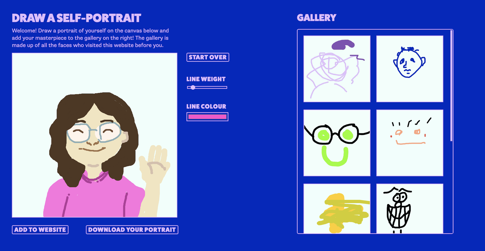

LAST SEMESTER


• At the end of last semester, I made two web experiments that I was excited about
• I used these to guide my capstone brief at the start of this semester, where I wrote how I wanted to move away from experiments and towards more finished works